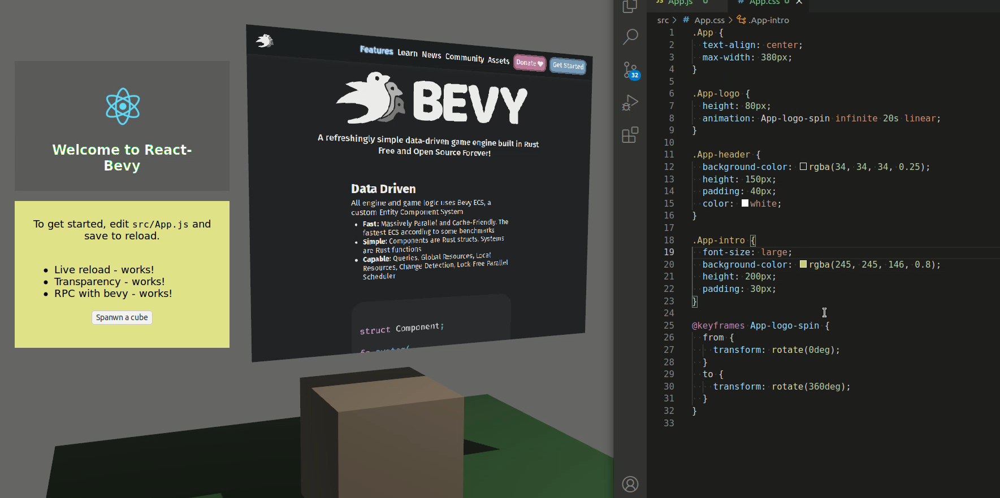

Introduction
bevy_webview is an experimental webview integration for Bevy game engine for rapidly iterating and building UI's using existing web-technogies and skillsets.

Use cases
-
Menus, about pages, etc.: In current state, webviews are good for menus, about pages, and other views that are updated maximum a few times a second
-
Pre-native iteration: Webviews are a good starting ground when experimenting the app/game design. Eventually, after landing a visually desired state, it is possible to continue by converting to native UI's.
Benefits?
-
Faster iteration speed: with instant reloading of webviews, it is possible to see the UI changes almost immediately. This is a lot faster iteration compared to compiled workflows. Seconds waiting add up quickly.
-
Reuse of existing web-based technologies: use tried-and-tested web technologies for developing the UI. Existing skillsets apply. Easier co-operation between game software developers and UI designers.
Disadvantages?
-
Lower performance: using a webview is inherently slower, and it is probably never possible to reach near-native speeds with the webview technology. Current implementation of
bevy_webviewis not recommended for use cases where the webview changes for every frame. See performance -
Larger memory footprint: browsers are complex software. Using a webview in your application will increase memory usage in the range of 50 - 150MB.
-
Narrower cross-platform support: currently, only Linux and Windows are supported. See engines.
Quickstart (UI mode)
This is a quickstart for UI/2D webview. See also 3d mode
Add imports:
#![allow(unused)] fn main() { extern crate bevy_webview; use bevy_webview::prelude::*; }
Add the plugin to Bevy App:
#![allow(unused)] fn main() { extern crate bevy; extern crate bevy_webview; use bevy::prelude::*; use bevy_webview::prelude::*; App::new() // initializations... .add_plugin(WebviewPlugin::with_engine(webview_engine::headless)); }
For various engines, see engines -section.
Make sure that you have UI camera in the scene:
#![allow(unused)] fn main() { extern crate bevy; use bevy::prelude::*; fn setup(mut commands: Commands) { commands.spawn_bundle(UiCameraBundle::default()); } }
Finally, spawn the Webview:
#![allow(unused)] fn main() { extern crate bevy; extern crate bevy_webview; use bevy::prelude::*; use bevy_webview::prelude::*; fn setup(mut commands: Commands) { commands.spawn_bundle(WebviewUIBundle { webview: Webview { uri: Some(String::from("https://bevyengine.org/")), ..Default::default() }, style: Style { size: Size::new(Val::Percent(80.0), Val::Percent(80.)), margin: Rect::all(Val::Auto), justify_content: JustifyContent::Center, align_items: AlignItems::Center, ..Default::default() }, ..Default::default() }); } }
More examples at examples.
Guide
-
3D mode: for creating 3D webview canvases instead of UI/2D mode
-
Javascript-Rust RPC: for implementing RPC-communications based on events, between Rust and Javascript
-
React integration: for integrating with React UI framework
-
Performance: for detailed considerations about performance
-
Engines: for information about existing platform-specific webview engines. Also contains info about integrating a 3rd party engine.
3D
This is a quickstart for 3D webview. See also 2D/UI mode

Add imports:
#![allow(unused)] fn main() { extern crate bevy_webview; use bevy_webview::prelude::*; }
Add the plugin to Bevy App:
#![allow(unused)] fn main() { extern crate bevy; extern crate bevy_webview; use bevy::prelude::*; use bevy_webview::prelude::*; App::new() // initializations... .add_plugin(WebviewPlugin::with_engine(webview_engine::headless)); }
Make sure that you have a perspective camera in the scene. Remember to add light as well.
#![allow(unused)] fn main() { extern crate bevy; use bevy::prelude::*; fn setup(mut commands: Commands) { commands.spawn_bundle(PerspectiveCameraBundle { transform: Transform::from_xyz(-2.0, 2.5, 5.0) .looking_at(Vec3::new(0.0, 2.0, 0.0), Vec3::Y), ..Default::default() }); } }
Finally, spawn the Webview:
#![allow(unused)] fn main() { extern crate bevy; extern crate bevy_webview; use bevy::prelude::*; use bevy_webview::prelude::*; fn setup(mut commands: Commands) { commands.spawn_bundle(WebviewBundle { webview: Webview { uri: Some(String::from("https://bevyengine.org/")), ..Default::default() }, transform: Transform { translation: Vec3::new(0.0, 2.5, 0.0), rotation: Quat::from_rotation_y(-std::f32::consts::PI / 2.0), ..Default::default() }, ..Default::default() }); } }
More examples at examples.
Javascript-Rust RPC
It is possible to configure Webview-RPC events for communication between Javascript and Rust. RPC responses are not supported currently.
Serde setup
First, make sure that your crate has serde installed. Add to Cargo.toml:
serde = { version = "1.0", features = [ "derive" ] }
In the application, import serde:
use serde::{Serialize, Deserialize};
RPC from Javascript to Rust
First, define a struct for the message (or enum, or other deserializable type). Make it deserializable with the serde's Deserialize -trait. Debug is optional.
#![allow(unused)] fn main() { extern crate bevy_webview; use bevy_webview::serde::Deserialize; #[derive(Deserialize, Debug)] pub struct LoginRequest { username: String, } }
Configure an event in the application setup code. The first parameter is a message method, used as a key when sending events.
#![allow(unused)] fn main() { extern crate bevy; extern crate bevy_webview; use bevy::prelude::*; use bevy_webview::prelude::*; use bevy_webview::serde::Deserialize; #[derive(Deserialize)] struct LoginRequest {}; App::new() .add_plugin(WebviewPlugin::with_engine(webview_engine::headless)) // initializations... .add_webview_input_event::<LoginRequest>("login"); }
And define a system to receive events:
#![allow(unused)] fn main() { extern crate bevy; use bevy::prelude::*; struct LoginRequest { username: String }; fn login_handler(mut login_request_events: EventReader<LoginRequest>) { for event in login_request_events.iter() { println!("Received a login request, username={:?}", event.username); } } }
Finally, call the RPC method from Javascript. bevy_webview will try to unmarshal the Javascript-provided JSON into an event struct defined and referenced by add_webview_input_event key string.
await rpc.call("login", { username: "test" });
Be mindful of not registering too many (hundreds) simultaneous events, as each call to add_webview_input_event will create two new Bevy-systems (standard Bevy event creates one system).
It is also possible to create a Rust enum and reference that by Javascript.
RPC from Rust to Javascript
First, define a struct for the message (or enum, or other deserializable type). Make it serializable with the serde's Serialize -trait. Debug is optional.
#![allow(unused)] fn main() { extern crate bevy_webview; use bevy_webview::serde::Serialize; #[derive(Serialize, Debug)] pub struct AppTime { seconds_since_startup: f64, } }
Then, configure an outgoing event in the setup code. The first parameter is the event method key, by which Javascript will subscribe into the event.
#![allow(unused)] fn main() { extern crate bevy; extern crate bevy_webview; use bevy::prelude::*; use bevy_webview::prelude::*; use bevy_webview::serde::Serialize; #[derive(Serialize)] struct AppTime {}; App::new() .add_plugin(WebviewPlugin::with_engine(webview_engine::headless)) // initializations... .add_webview_output_event::<AppTime>("app_time"); }
In Javascript, register an event handler by calling rpc.on(method, callback). You can have multiple registrations for one method. The parameter for callback will be a Javascript object unmarshalled from JSON by JSON.parse.
rpc.on("app_time", (app_time) => {
console.log(
"Seconds since startup: " + app_time.seconds_since_startup.toFixed(4)
);
});
Finally, send an event from a Bevy system using a Bevy-standard EventWriter<T>:
#![allow(unused)] fn main() { extern crate bevy; use bevy::prelude::*; struct AppTime { seconds_since_startup: f64 }; fn send_time_system(mut app_time: EventWriter<AppTime>, time: Res<Time>) { app_time.send(AppTime { seconds_since_startup: time.seconds_since_startup(), }); } }
For now, you should avoid redrawing on Javascript by every frame. See performance for more information.
Asset bundling
Asset bundling not yet implemented, but local asset usage works already.
Local Assets
It is possible to use local assets from assets/webview/... folder. These assets can be referenced by webview:// protocol, e.g. assets/webview/react_app/index.html will be resolvable through webview://react_app/index.html.
extern crate bevy;
extern crate bevy_webview;
use bevy::prelude::*;
use bevy_webview::prelude::*;
fn setup(mut commands: Commands) {
commands.spawn_bundle(WebviewUIBundle {
webview: Webview {
uri: Some(String::from("webview://react_app/index.html")),
..Default::default()
}
});
}
React Integration
It is possible to use React (or any other similar framework) together with bevy_webview. Follow the normal React-project creation, and start react in the local development mode. Finally, you should see the server listening in an local address (localhost:3000).
Compiled successfully!
The app is running at:
http://localhost:3000/
Note that the development build is not optimized.
To create a production build, use npm run build.
Connect the webview to the React app using an URL. Note the transparent: true flag, which works especially well in the UI mode.
#![allow(unused)] fn main() { extern crate bevy; extern crate bevy_webview; use bevy::prelude::*; use bevy_webview::prelude::*; fn setup(mut commands: Commands) { commands.spawn_bundle(WebviewUIBundle { webview: Webview { uri: Some(String::from("http://localhost:3000/")), color: Color::rgba(0., 0., 0., 0.0), ..Default::default() }, style: Style { size: Size::new(Val::Percent(80.0), Val::Percent(80.)), margin: Rect::all(Val::Auto), justify_content: JustifyContent::Center, align_items: AlignItems::Center, ..Default::default() }, ..Default::default() }); } }
See RPC for communication between Javascript and Rust code.
After asset bundling is implemented, the code should be released conditionally:
extern crate bevy;
extern crate bevy_webview;
use bevy::prelude::*;
use bevy_webview::prelude::*;
fn setup(mut commands: Commands) {
commands.spawn_bundle(WebviewUIBundle {
webview: Webview {
#[cfg(debug_assertions)]
uri: Some(String::from("http://localhost:3000/")),
#[cfg(not(debug_assertions))]
uri: Some(String::from("webview://react_app/index.html")),
// NOTE! The webview:// method is not yet implemented!
transparent: true,
..Default::default()
}
});
}
Performance
TODO!
- Memory usage
- CPU usage
- GPU usage
- Rendering
Webview Engines
Linux
The plugin uses (webkitgtk as an underlying engine on Linux. Windowing (in headless mode too) is handled by gtk.
headless
Default mode. Implemented by using gtk::OffscreenWindow as a canvas, where the webview is initialized.
#![allow(unused)] fn main() { extern crate bevy; extern crate bevy_webview; use bevy::prelude::*; use bevy_webview::prelude::*; let webview_plugin = WebviewPlugin::with_engine(webview_engine::headless); App::new() // initializations... .add_plugin(webview_plugin); }
windowed
For debugging purposes. This will start the webview in a windowed mode. Implemented by using gtk::Window.
#![allow(unused)] fn main() { extern crate bevy; extern crate bevy_webview; use bevy::prelude::*; use bevy_webview::prelude::*; let webview_plugin = WebviewPlugin::with_engine(webview_engine::windowed); App::new() // initializations... .add_plugin(webview_plugin); }
Windows
The plugin uses WebView2 as an underlying webview engine on Windows. Windowing is handled by Win32 C++ API.
Integrating an own engine
It is also possible to use your own webview engine. For now, see the dummy.rs -example for API usage.
Unimplemented
Help needed! Currently the following platforms are unimplemented.
- Mac
- IOS
- Android
FAQ
TODO!